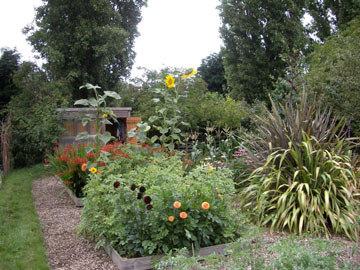
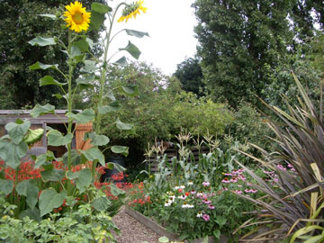
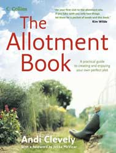

Many people, disappointed with the high price and poor quality of vegetables available in shops, have started growing their own. This project on a site next to the River Thames at Chiswick transformed a derelict allotment into a productive vegetable and fruit garden and won first prize in the Chiswick Horticultural Society Allotment competition in its first year.


before - totally overgrown

clearance begins

bonfires needed to burn rubbish

clearance is complete
A shed is installed (for tool storage and to provide shelter from the rain) and raised beds are constructed. These make crop rotation more managable (legumes - brassicas - roots), aid drainage, give a greater depth of topsoil and enable compost and manures to be applied just to the areas required. In addition the natural structure of the soil is preserved as it is not walked on.

shed constructed, raised beds installed

manure is dug into each bed

bark chippings form pathways and help suppress weeds

the first year's crops include potatoes; broad, runner and borlotti beans
The second and third years produce even better results ...




Compost bins have been made from pallets and take all the green waste (except perennial weeds) from the plot. Broken down by micro-organisms and turned regularly the waste provides an excellent source of compost for future seasons.
This project features in The Allotment Book written by Andi Clevely and including photographs by Mike Newton
